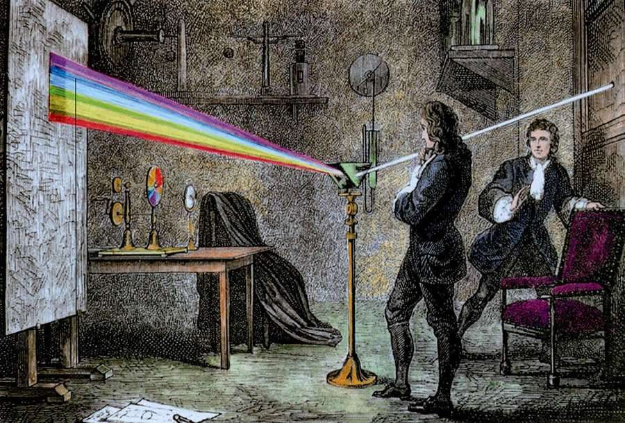
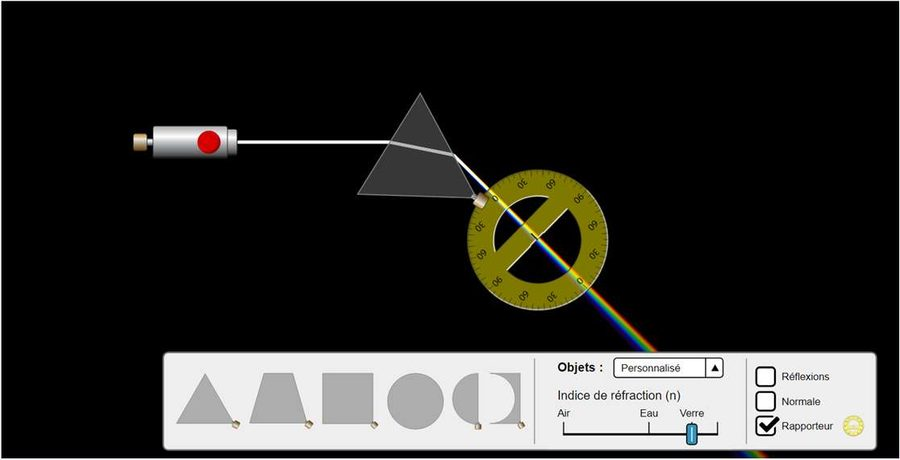
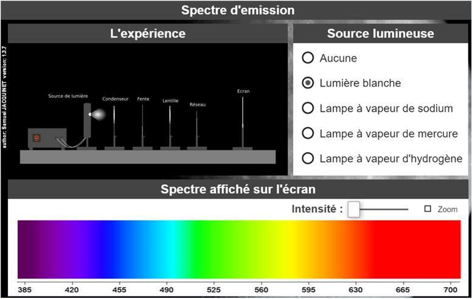
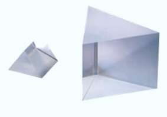
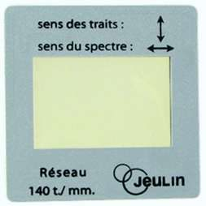
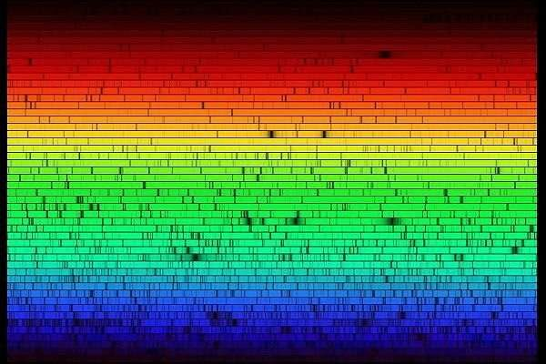
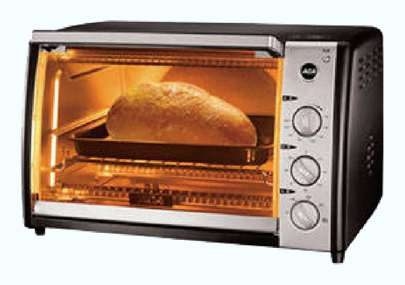
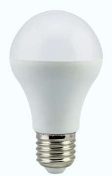
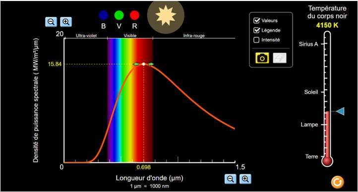

Dispersion de la lumière et spectres lumineux
Ce chapitre sera débloqué en fin de séquence, au rythme de la classe. Le code de déblocage est transmis via le cahier de textes — il figure aussi en bas de ta fiche de cours.
Sommaire du chapitre
Physique-Chimie · 2nde · Thème 3 — Ondes et signaux
Dispersion de la lumière et spectres lumineux
Thème 3 · Chapitre 3 — cours & exercices corrigés
01 Dispersion de la lumière
A · La dispersion
La lumière blanche est composée de toutes les lumières colorées visibles — les « couleurs de l'arc-en-ciel », du rouge au violet.
Un prisme peut décomposer la lumière blanche : ce phénomène est appelé la dispersion de la lumière (il la dévie également).
La dispersion est un phénomène réversible : la lumière blanche décomposée par un premier prisme peut être recomposée en lumière blanche par un second prisme.

Isaac Newton — l'« expérience cruciale » (1666)
En 1666, Isaac Newton, âgé de 23 ans, reproduit les expériences de décomposition de la lumière, puis réalise son « expérience cruciale ». Elle lui permet de comprendre que la lumière blanche est composée de toutes les couleurs mélangées, le prisme ne faisant que les séparer.
B · Lumière monochromatique ou polychromatique
Une lumière qui ne peut pas être décomposée par un prisme est monochromatique : elle correspond à une seule radiation (du grec mono, « seul », et chroma, « la couleur »). Un LASER émet une lumière monochromatique.
Une lumière qui peut être décomposée est polychromatique : elle correspond à un ensemble de plusieurs radiations (du grec poly, « plusieurs »). La lumière blanche est forcément polychromatique.
Légender le schéma en utilisant les termes : lumière monochromatique, lumière polychromatique et lumière blanche.
Voir la correction
Le faisceau qui arrive sur le premier prisme est de la lumière blanche ; comme le prisme la décompose, c'est une lumière polychromatique — elle contient plusieurs radiations.
La fente ne laisse passer qu'une seule couleur, ici le vert. Le second prisme ne la décompose pas : c'est une lumière monochromatique, une radiation unique.
Le test est toujours le même : une lumière qui se décompose est polychromatique, une lumière qui résiste au prisme est monochromatique.
C · Longueur d’onde et domaines de radiations
La longueur d'onde λ d'une radiation est la distance séparant deux maxima successifs de l'onde. Dans le vide, elle s'exprime en mètre (m) ; pour la lumière, on l'exprime souvent en nanomètre (nm).
Les radiations sont des ondes électromagnétiques (OEM). Le spectre électromagnétique comporte plusieurs domaines. La lumière visible s'étend d'environ 400 nm (violet) à 800 nm (rouge) ; en dessous se trouvent les ultraviolets (UV), au-dessus les infrarouges (IR).
Indiquer le domaine (UV, visible ou IR) de chacune des radiations suivantes.
λ1 = 1250 nm · λ2 = 4,7 × 10−7 m · λ3 = 0,75 µm · λ4 = 200 × 10−9 m
Voir la correction
λ2 = 4,7 × 10−7 m = 470 × 10−9 m = 470 nm
λ3 = 0,75 µm = 0,75 × 10−6 m = 750 × 10−9 m = 750 nm
λ4 = 200 × 10−9 m = 200 nm
- λ1 = 1250 nm > 800 nm → infrarouge (IR)
- λ2 = 470 nm ∈ [400 ; 800] nm → visible
- λ3 = 750 nm ∈ [400 ; 800] nm → visible
- λ4 = 200 nm < 400 nm → ultraviolet (UV)
Associer chaque usage à son domaine de radiations.
Usages : Radiographie · Lampe UV · Télécommande · Haute tension · FM/TV · Éléments radioactifs · Ampoule · Radar.
Domaines : Rayons gamma · Rayons X · Ultraviolets · Lumière visible · Infrarouges · Micro-ondes · Ondes radio.
Voir la correction
- Éléments radioactifs → Rayons gamma
- Radiographie → Rayons X
- Lampe UV → Ultraviolets
- Ampoule → Lumière visible
- Télécommande → Infrarouges
- Radar → Micro-ondes
- FM/TV et Haute tension → Ondes radio
D · Milieu dispersif
Un milieu dispersif est un milieu dans lequel la vitesse de propagation de l'onde dépend de sa longueur d'onde. Les couleurs qui composent la lumière blanche y sont déviées selon des angles différents, ce qui permet sa décomposition. C'est ce qui se produit dans les gouttelettes d'eau (systèmes dispersifs) et donne naissance à l'arc-en-ciel.


02 Les spectres lumineux
A · Définition
Un spectre lumineux est l'ensemble des radiations monochromatiques résultant de la décomposition d'un rayonnement complexe. On utilise un système dispersif fondé soit sur la réfraction (prisme), soit sur la diffraction (spectroscope, réseau).



B · Spectre d’émission continu
Un spectre d'émission est le spectre de la lumière directement émise par une source lumineuse.


Image 14 — Exemples de sources de lumière : résistances de four, Soleil, ampoule à filament, LED, flamme.
Un corps dense (solide, liquide, ou gaz sous forte pression) porté à une certaine température émet un rayonnement thermique qui suit la loi de Planck et ne dépend que de sa température. Son spectre est un spectre continu d'émission : une bande colorée unique composée d'une infinité de radiations. Plus le corps est chaud, plus son spectre s'enrichit vers le violet (courtes longueurs d'onde).
1 — Cocher la bonne réponse. 2 — À partir de quelle température un corps émet-il de la lumière visible ? 3 — Quels corps émettent des UV ? 4 — Quel rayonnement est émis par la Terre ?
Voir la correction
| Affirmation | Réponse |
|---|---|
| La Terre n'émet pas de lumière visible. | VRAI |
| La Terre n'émet pas de lumière. | FAUX |
| Plus le corps est chaud, plus son spectre s'enrichit en rouge. | FAUX |
| La couleur du corps est identique à celle indiquée par le pic de densité de puissance spectrale. | FAUX |
≈ 800 K
Lampe / Soleil / Sirius A (corps les plus chauds).
IR / micro-ondes / ondes radio (corps peu chaud → grandes longueurs d'onde).

C · Spectre de raies d’émission
Un spectre de raies d'émission présente une suite de raies colorées distinctes : la lumière n'est composée que d'un nombre limité de radiations monochromatiques. Chaque entité chimique, sous forme de gaz à faible pression, émet un spectre de raies bien déterminé qui permet de l'identifier, comme une signature.
On observe la lumière émise par un feu d'artifice à l'aide d'un spectroscope. 1 — Déterminer la longueur d'onde de chaque radiation. 2 — Identifier l'élément chimique correspondant.
Voir la correction
λ1 = 450 + 250 × 488 ≈ 461 nm
De la même manière, on lit : λ2 ≈ 498 nm, λ3 ≈ 612 nm, λ4 ≈ 672 nm.
Ces quatre raies coïncident avec celles du lithium (Li) du tableau ci-dessous ; il ne peut donc s'agir que du lithium.
| Élément | Raies (nm) |
|---|---|
| Lithium (Li) | 460 · 497 · 610 · 670 |
| Sodium (Na) | 448 · 455 · 569 · 590 |
Afin de travailler plus facilement l'acier, les forgerons le chauffent fortement dans un four. Identifier les spectres correspondant aux lumières émises par les différentes zones chauffées de l'acier, et justifier.
Voir la correction
Les corps chauds émettent des spectres continus d'émission : les spectres de raies a. et c. ne peuvent donc pas être associés à cet acier chauffé.
Plus un corps est chaud, plus son spectre s'enrichit vers le violet. On associe donc le spectre d. à la partie la plus chaude et jaune de l'acier, et le spectre b. aux extrémités moins chaudes.
✓ Pour le DS, je sais :
M. Van HoordeLycée général Isaac de l'Étoile · Poitiers